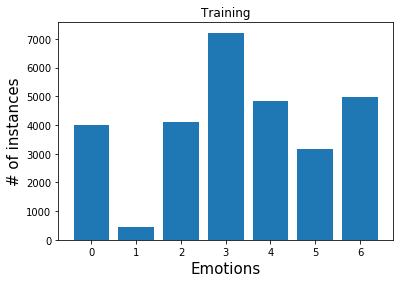
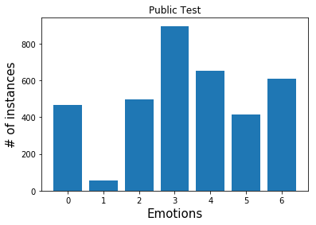
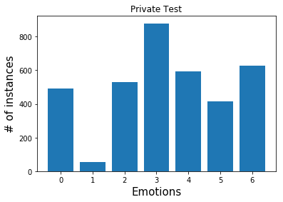
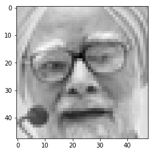
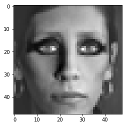
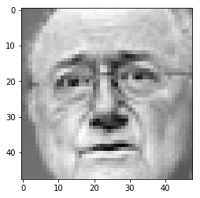
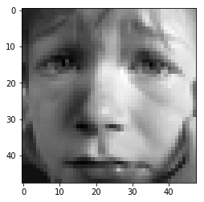
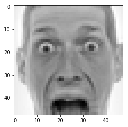
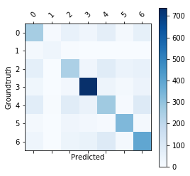
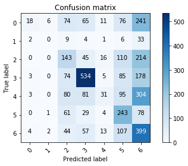

FER2013 Challenge
CNN and/or SVM
- Here I try to examine the performance of CNN on the task of facial emotion recognition using static image data.
- CNNs are considered as state of the art for image recognition and classification tasks due to their inherent capability of capturing spatial relationships in images.
- Moreover, I also try to investigate the generalization performance gain using data augmentation techniques on image data.
Distribution of the data in FER2013 dataset.
- Before we begin, let’s get an idea of the distribution of the classes in the dataset.
- This will help us with identifying the inherent bias in the dataset.
Import libs.
import torch
import torch.nn as nn
import torch.nn.functional as F
from torch.utils.data import Dataset, DataLoader
import torch.optim as optim
import numpy as np
import matplotlib.pyplot as plt
import pandas as pd
from torchvision import transforms
import cv2
import torchvision
import sys
class FileReader:
def __init__(self, csv_file_name):
self._csv_file_name = csv_file_name
def read(self):
self._data = pd.read_csv(self._csv_file_name)
file_reader = FileReader('fer2013/fer2013.csv')
file_reader.read()
columns = file_reader._data.columns.values
classes = sorted(file_reader._data['emotion'].unique())
distribution = file_reader._data.groupby('Usage')['emotion'].value_counts().to_dict()
# Trainig Instances
plt.bar(classes, [distribution[('Training', i)] for i in classes])
plt.xlabel('Emotions', fontsize=15)
plt.ylabel('# of instances', fontsize=15)
plt.xticks(classes, classes, fontsize=10)
plt.title('Training')
plt.show()
# Development instances
plt.bar(classes, [distribution[('PublicTest', i)] for i in classes])
plt.xlabel('Emotions', fontsize=15)
plt.ylabel('# of instances', fontsize=15)
plt.xticks(classes, classes, fontsize=10)
plt.title('Public Test')
plt.show()
# Validation Instances
plt.bar(classes, [distribution[('PrivateTest', i)] for i in classes])
plt.xlabel('Emotions', fontsize=15)
plt.ylabel('# of instances', fontsize=15)
plt.xticks(classes, classes, fontsize=10)
plt.title('Private Test')
plt.show()



- This shows a severe class imbalance with the highest concentration of training instances at class 3 and the lowest at class 1.
- In this experiment I will try to handle this imbalance using data augmentation.
Utility class for supplying train, dev and validation data
We could have easily used pandas here but I’m trying to reuse some code I had written earlier.
class Data:
"""
Initialize the Data utility.
:param data:
a pandas DataFrame containing data from the
FER2013 dataset.
:type file_path:
DataFrame
class variables:
_x_train, _y_train:
Training data and corresopnding labels
_x_test, _y_test:
Testing data and corresopnding labels
_x_valid, _y_validation:
Validation/Development data and corresopnding labels
"""
def __init__(self, data):
self._x_train, self._y_train = [], []
self._x_test, self._y_test = [], []
self._x_valid, self._y_valid = [], []
for xdx, x in enumerate(data.values):
pixels = []
label = None
for idx, i in enumerate(x[1].split(' ')):
pixels.append(int(i))
pixels = np.array(pixels).reshape((1, 48, 48))
if x[2] == 'Training':
self._x_train.append(pixels)
self._y_train.append(int(x[0]))
elif x[2] == 'PublicTest':
self._x_test.append(pixels)
self._y_test.append(int(x[0]))
else:
self._x_valid.append(pixels)
self._y_valid.append(int(x[0]))
self._x_train, self._y_train = np.array(self._x_train).reshape((len(self._x_train), 1, 48, 48)),\
np.array(self._y_train, dtype=np.int64)
self._x_test, self._y_test = np.array(self._x_test).reshape((len(self._x_test), 1, 48, 48)),\
np.array(self._y_test, dtype=np.int64)
self._x_valid, self._y_valid = np.array(self._x_valid).reshape((len(self._x_valid), 1, 48, 48)),\
np.array(self._y_valid, dtype=np.int64)
data = Data(file_reader._data)
Preprocess the data
- Zero out the mean, so as to improve the convergence.
- Normalize between 0 and 1. (skipping this here, since PyTorch has a transformer for this.)
data._x_train = np.asarray(data._x_train, dtype=np.float64)
data._x_train -= np.mean(data._x_train, axis = 0)
for ix in range(10):
plt.figure(ix)
plt.imshow(data._x_train[ix].reshape((48, 48)), interpolation='none', cmap='gray')
plt.show()










Implementation of CNN Architecture
class CNN(nn.Module):
def __init__(self, num_classes=7):
super(CNN, self).__init__()
self.layer1 = nn.Sequential(
nn.Conv2d(1, 64, kernel_size=5),
nn.PReLU(),
nn.ZeroPad2d(2),
nn.MaxPool2d(kernel_size=5, stride=2)
)
self.layer2 = nn.Sequential(
nn.ZeroPad2d(padding=1),
nn.Conv2d(64, 64, kernel_size=3),
nn.PReLU(),
nn.ZeroPad2d(padding=1)
)
self.layer3 = nn.Sequential(
nn.Conv2d(64, 128, kernel_size=3),
nn.PReLU(),
nn.AvgPool2d(kernel_size=3, stride=2)
)
self.layer4 = nn.Sequential(
nn.ZeroPad2d(1),
nn.Conv2d(128, 128, kernel_size=3),
nn.PReLU()
)
self.layer5 = nn.Sequential(
nn.ZeroPad2d(1),
nn.Conv2d(128, 128, kernel_size=3),
nn.PReLU(),
nn.ZeroPad2d(1),
nn.AvgPool2d(kernel_size=3, stride=2)
)
self.fc1 = nn.Linear(3200, 1024)
self.prelu = nn.PReLU()
self.dropout = nn.Dropout(p=0.2)
self.fc2 = nn.Linear(1024, 1024)
self.fc3 = nn.Linear(1024, 7)
self.log_softmax = nn.LogSoftmax(dim=1)
def forward(self, x):
x = self.layer1(x)
x = self.layer2(x)
x = self.layer3(x)
x = self.layer4(x)
x = self.layer5(x)
x = x.view(x.size(0), -1)
x = self.fc1(x)
x = self.prelu(x)
x = self.dropout(x)
x = self.fc2(x)
x = self.prelu(x)
x = self.dropout(x)
y = self.fc3(x)
y = self.log_softmax(y)
return y
Dataset for pytorch DataLoader
class FER2013Dataset(Dataset):
"""FER2013 Dataset."""
def __init__(self, X, Y, transform=None):
"""
Args:
X (np array): Nx1x32x32.
Y (np array): Nx1.
transform (callable, optional): Optional transform to be applied
on a sample.
"""
self.transform = transform
self._X = X
self._y = Y
def __len__(self):
return len(self._X)
def __getitem__(self, idx):
if self.transform:
return {'inputs': self.transform(self._X[idx]), 'labels': self._y[idx]}
return {'inputs': self._X[idx], 'labels': self._y[idx]}
Network hyperparameters
NUM_EPOCHS = 100
BATCH_SIZE = 128
LR = 0.1
MIN_LR = 0.0000001
MODEL_PATH_PREFIX = 'model-cnn-epoch'
MODEL_PATH_EXT = 'pth'
device = torch.device("cuda" if torch.cuda.is_available() else "cpu")
Create the train and test loader
preprocess = transforms.Compose([
transforms.RandomHorizontalFlip(),
transforms.RandomRotation(6),
transforms.ColorJitter()
])
train_set = FER2013Dataset(data._x_train, data._y_train, transform=preprocess)
test_set = FER2013Dataset(data._x_valid, data._y_valid)
train_loader = DataLoader(train_set, batch_size=BATCH_SIZE, num_workers=0, shuffle=True)
test_loader = DataLoader(test_set, batch_size=BATCH_SIZE, num_workers=0, shuffle=False)
Train the network
def train(model, dataset_loader, epoch, device, optimizer, criterion):
model.train()
running_loss = 0.0
for i , (data, target) in enumerate(dataset_loader):
inputs, labels = data, target
inputs = inputs.float()
inputs, labels = inputs.to(device), labels.to(device)
optimizer.zero_grad()
outputs = model(inputs)
loss = F.nll_loss(outputs, labels)
loss.backward()
optimizer.step()
running_loss += loss.item()
"""
print('Train: [Epoch: {}/{}, Batch: {} ({:.0f}%)]'
.format(
epoch,
NUM_EPOCHS,
i + 1,
i*100/len(train_loader)
), end='\r')
"""
return running_loss
def test(model, dataset_loader, device, criterion):
model.eval()
correct = 0
total = 0
valid_loss = 0
with torch.no_grad():
for i, (data, target) in enumerate(dataset_loader):
images, labels = data, target
images = images.float()
images, labels = images.to(device), labels.to(device)
outputs = model(images)
valid_loss += F.nll_loss(outputs, labels).item()
pred = outputs.max(1, keepdim=True)[1]
correct += pred.eq(labels.view_as(pred)).sum().item()
accuracy = 100 * correct / len(test_loader.dataset)
return valid_loss, accuracy
def load_model(best_model, learning_rate, device):
checkpoint = torch.load(
'{}-{}.{}'.format(
MODEL_PATH_PREFIX,str(best_model), MODEL_PATH_EXT
)
)
model = CNN()
model.load_state_dict(checkpoint['model'])
model.to(device)
optimizer = optim.Adadelta(model.parameters(), lr=learning_rate, rho=0.95, eps=1e-08)
optimizer.load_state_dict(checkpoint['optimizer'])
for state in optimizer.state.values():
for k, v in state.items():
if torch.is_tensor(v):
state[k] = v.to(device)
return model, optimizer
def restart_training(best_model, learning_rate, device):
model, optimizer = load_model(best_model, learning_rate, device)
return model, optimizer
Initialize the network and loss
cnn = CNN()
cnn = cnn.to(device)
criterion = nn.CrossEntropyLoss()
optimizer = optim.Adadelta(cnn.parameters(), lr=LR, rho=0.95, eps=1e-08)
loss_es = []
best_accuracy = 0.0
last_acc = 0
best_model = -1
count_acc = 0
epoch = 1
print("Epoch\tTrain Loss\tValidation Loss\tValidation Acc\tBest Model")
while epoch <= NUM_EPOCHS:
running_loss = train(cnn, train_loader, epoch, device, optimizer, criterion)
valid_loss, accuracy = test(cnn, test_loader, device, criterion)
# record all the models that we have had so far.
loss_es.append((running_loss, valid_loss, accuracy))
# write model to disk.
state = {
'model': cnn.state_dict(),
'optimizer': optimizer.state_dict()
}
'models/model-cnn-epoch'
torch.save(state, MODEL_PATH_PREFIX + '-{}.'.format(epoch) + MODEL_PATH_EXT)
"""
SIMPLE MOMENTUM CONTROL.
NOT NEEDED IN CASE OF ADADELTA.
# reset if:
# 1. the accuracy is less than the best accuracy so far
# 2. the accuracy is equal to the best accuracy so far for preset # of counts.
# 3. train accuracy is increasing but test accuracy is decreasing.
if accuracy < best_accuracy or int(accuracy) == int(best_accuracy):
count_acc += 1
if accuracy > best_accuracy:
best_accuracy = accuracy
best_model = epoch
print('Best Accuracy: {}'.format(best_accuracy))
if count_acc == 5:
if LR/4 < MIN_LR:
# END TRAINING.
break
else:
LR/=4
print(
'Plateau identified: Restarting with the best model: {} and reduced learning rate: {}.'
.format(best_model, LR)
)
cnn, optimizer = restart_training(best_model, LR, device)
# transfer everything back to the cuda cores.
count_acc = 0
epoch = best_model
"""
if accuracy > best_accuracy:
best_accuracy = accuracy
best_model = epoch
print('{}\t{:.5f}\t{:.5f}\t{:.3f}\t\t{}'.format(
epoch,
running_loss,
valid_loss,
accuracy,
best_model
))
epoch+=1
print('Trainig complete')
Epoch Train Loss Validation Loss Validation Acc Best Model
1 1685.93596 106.20536 22.903 1
2 1591.09088 101.40666 27.334 2
3 1553.72696 97.92949 32.544 3
4 1533.59225 96.91410 34.021 4
5 1513.89805 92.90328 37.754 5
6 1495.08483 90.89701 39.064 6
7 1478.16471 88.94343 40.763 7
8 1463.52916 87.33813 41.098 8
9 1450.52275 85.33221 42.268 9
10 1439.97765 83.93976 43.327 10
11 1429.45429 82.91819 44.999 11
12 1419.53646 82.62134 44.581 11
13 1409.60705 81.55871 46.225 13
14 1398.35822 79.15174 47.841 14
15 1387.77786 77.76269 48.788 15
16 1378.10983 79.74725 47.367 15
17 1368.83348 76.42932 49.875 17
18 1361.31935 76.17914 49.902 18
19 1352.07163 74.37331 51.128 19
20 1345.01738 74.27596 51.351 20
21 1339.40665 72.99756 51.268 20
22 1331.06483 74.19537 51.045 20
23 1325.27408 72.05850 52.271 23
24 1319.70440 71.54738 52.605 24
25 1314.98088 71.69513 52.912 25
26 1307.92518 70.13188 53.720 26
27 1303.27919 70.11572 53.636 26
28 1297.27523 69.70026 54.388 28
29 1292.92050 68.90579 54.918 29
30 1287.40914 68.91240 54.723 29
31 1281.69389 68.58562 55.531 31
32 1277.96462 68.30692 55.559 32
33 1272.23658 68.37742 55.642 33
34 1268.82134 67.33636 55.949 34
35 1263.88944 66.99713 55.949 34
36 1258.00497 67.13389 55.809 34
37 1253.32860 66.68986 57.008 37
38 1248.69677 66.38132 57.537 38
39 1245.63736 66.35748 56.283 38
40 1238.02590 66.01609 57.565 40
41 1235.74283 66.61944 56.812 40
42 1230.46363 65.04612 57.843 42
43 1224.98395 64.95361 57.425 42
44 1220.62901 64.63731 58.429 44
45 1215.22678 65.95205 57.565 44
46 1212.09207 65.47792 58.038 44
47 1206.60810 64.42303 58.707 47
48 1203.50954 64.56687 58.429 47
49 1197.35651 64.57793 58.902 49
50 1193.06041 64.54822 59.237 50
51 1188.51553 64.17627 59.125 50
52 1183.42935 64.46189 59.292 52
53 1178.96105 65.09585 59.376 53
54 1174.83022 63.63776 60.240 54
55 1170.55466 63.79009 59.515 54
56 1164.28975 64.25126 60.295 56
57 1160.08335 64.54163 59.933 56
58 1154.64719 64.04395 59.794 56
59 1150.14978 63.74366 59.209 56
60 1145.65605 64.05553 59.961 56
61 1140.86851 67.42890 59.543 56
62 1135.10950 64.61808 60.351 62
63 1132.24638 64.72466 60.769 63
64 1125.54823 64.22109 60.212 63
65 1122.60779 65.70305 60.295 63
66 1117.49797 64.61166 60.741 63
67 1110.32960 64.76850 61.048 67
68 1106.69533 64.89375 61.271 68
69 1103.00801 65.07093 60.825 68
70 1098.92290 65.14410 60.964 68
71 1092.84797 66.06810 60.546 68
72 1090.18399 68.24321 61.326 72
73 1084.91950 66.10811 61.326 72
74 1080.57200 68.06933 61.688 74
75 1077.03942 68.66513 61.410 74
76 1070.82023 68.02429 61.633 74
77 1066.40422 66.92900 61.884 77
78 1061.25710 69.96470 60.853 77
79 1058.62198 67.23344 61.605 77
80 1055.23744 70.13480 61.438 77
81 1051.00994 69.28317 62.051 81
82 1044.90644 68.67074 60.741 81
83 1040.93543 70.11000 62.162 83
84 1036.33466 68.84110 61.828 83
85 1033.43411 69.01436 61.661 83
86 1029.07882 75.59484 61.661 83
87 1022.82293 70.94892 61.271 83
88 1019.84730 69.85574 61.939 83
89 1014.16903 71.77426 62.023 83
90 1013.65742 72.56105 62.524 90
91 1009.30000 73.61257 61.772 90
92 1003.52110 73.26397 61.939 90
93 999.36820 74.46790 63.110 93
94 997.79510 73.13338 61.967 93
95 997.57594 74.88139 62.162 93
96 990.84471 79.45836 61.884 93
97 985.84581 76.10132 61.828 93
98 981.82744 77.95777 62.079 93
99 981.18371 79.25336 61.577 93
100 977.04900 78.67426 62.051 93
Trainig complete
Validation
def load_valid_dataset():
data_path = 'fer2013/images/single_agent/PrivateTest/'
valid_dataset = torchvision.datasets.ImageFolder(
root=data_path,
transform=torchvision.transforms.ToTensor()
)
valid_loader = torch.utils.data.DataLoader(
valid_dataset,
batch_size=64,
num_workers=0,
shuffle=False
)
return valid_loader
valid_loader = load_valid_dataset()
best_trained_model, _ = load_model(93, 0, device)
best_trained_model.eval()
CNN(
(layer1): Sequential(
(0): Conv2d(3, 64, kernel_size=(5, 5), stride=(1, 1))
(1): PReLU(num_parameters=1)
(2): ZeroPad2d(padding=(2, 2, 2, 2), value=0)
(3): MaxPool2d(kernel_size=5, stride=2, padding=0, dilation=1, ceil_mode=False)
)
(layer2): Sequential(
(0): ZeroPad2d(padding=(1, 1, 1, 1), value=0)
(1): Conv2d(64, 64, kernel_size=(3, 3), stride=(1, 1))
(2): PReLU(num_parameters=1)
(3): ZeroPad2d(padding=(1, 1, 1, 1), value=0)
)
(layer3): Sequential(
(0): Conv2d(64, 128, kernel_size=(3, 3), stride=(1, 1))
(1): PReLU(num_parameters=1)
(2): AvgPool2d(kernel_size=3, stride=2, padding=0)
)
(layer4): Sequential(
(0): ZeroPad2d(padding=(1, 1, 1, 1), value=0)
(1): Conv2d(128, 128, kernel_size=(3, 3), stride=(1, 1))
(2): PReLU(num_parameters=1)
)
(layer5): Sequential(
(0): ZeroPad2d(padding=(1, 1, 1, 1), value=0)
(1): Conv2d(128, 128, kernel_size=(3, 3), stride=(1, 1))
(2): PReLU(num_parameters=1)
(3): ZeroPad2d(padding=(1, 1, 1, 1), value=0)
(4): AvgPool2d(kernel_size=3, stride=2, padding=0)
)
(fc1): Linear(in_features=3200, out_features=1024, bias=True)
(prelu): PReLU(num_parameters=1)
(dropout): Dropout(p=0.2)
(fc2): Linear(in_features=1024, out_features=1024, bias=True)
(fc3): Linear(in_features=1024, out_features=7, bias=True)
(log_softmax): LogSoftmax()
)
predictions = []
groundtruth = []
with torch.no_grad():
for data, target in valid_loader:
images, labels = data, target
images = images.float()
images, labels = images.to(device), labels.to(device)
outputs = best_trained_model(images)
predictions.append(outputs.max(1, keepdim=True)[1])
groundtruth.append(labels)
for idx,prediction in enumerate(predictions):
predictions[idx] = prediction.cpu().numpy()
groundtruth[idx] = groundtruth[idx].cpu().numpy()
predictions = np.concatenate(predictions)
groundtruth = np.concatenate(groundtruth)
groundtruth = pd.Series(groundtruth, name='Groundtruth')
predictions = pd.Series(predictions.reshape(predictions.shape[0]), name='Predicted')
df_confusion = pd.crosstab(groundtruth, predictions)
def plot_confusion_matrix(df_confusion, title='Confusion matrix', cmap=plt.cm.Blues):
plt.matshow(df_confusion, cmap=cmap) # imshow
#plt.title(title)
plt.colorbar()
tick_marks = np.arange(len(df_confusion.columns))
plt.xticks(tick_marks, df_confusion.columns, rotation=45)
plt.yticks(tick_marks, df_confusion.index)
#plt.tight_layout()
plt.ylabel(df_confusion.index.name)
plt.xlabel(df_confusion.columns.name)
plot_confusion_matrix(df_confusion)

df_confusion
| Predicted | 0 | 1 | 2 | 3 | 4 | 5 | 6 |
|---|---|---|---|---|---|---|---|
| Groundtruth | |||||||
| 0 | 259 | 6 | 53 | 29 | 70 | 13 | 61 |
| 1 | 13 | 34 | 3 | 2 | 2 | 1 | 0 |
| 2 | 68 | 2 | 245 | 30 | 84 | 46 | 53 |
| 3 | 26 | 0 | 20 | 739 | 36 | 17 | 41 |
| 4 | 78 | 3 | 86 | 48 | 274 | 7 | 98 |
| 5 | 12 | 1 | 30 | 18 | 6 | 334 | 15 |
| 6 | 34 | 2 | 39 | 50 | 93 | 13 | 395 |
np.sum(df_confusion.values.diagonal())/len(valid_loader.dataset.samples)
Accuracy = 0.6352744497074394
Comparing without data augmenation we get:

Accuracy = 0.38127090301003347
Conclusion
- Data Augmentation clearly helps tackle data bias.